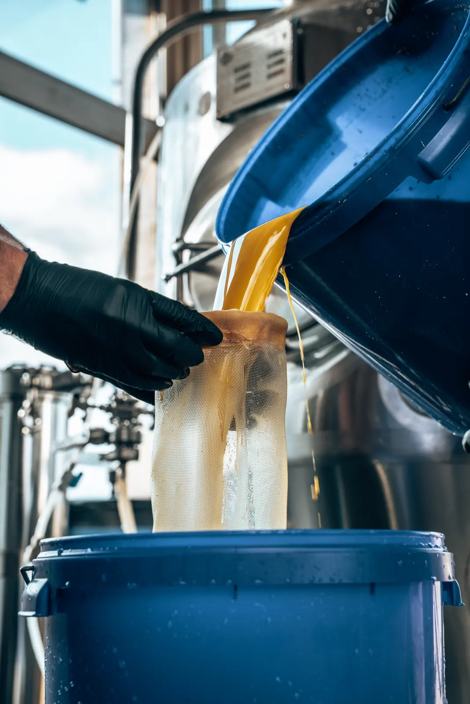
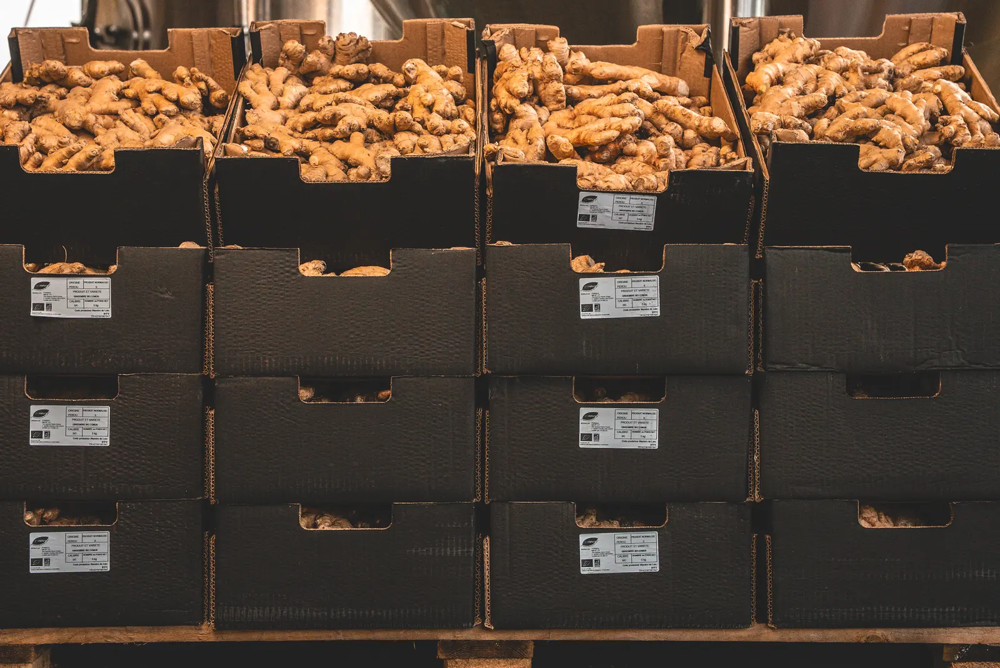
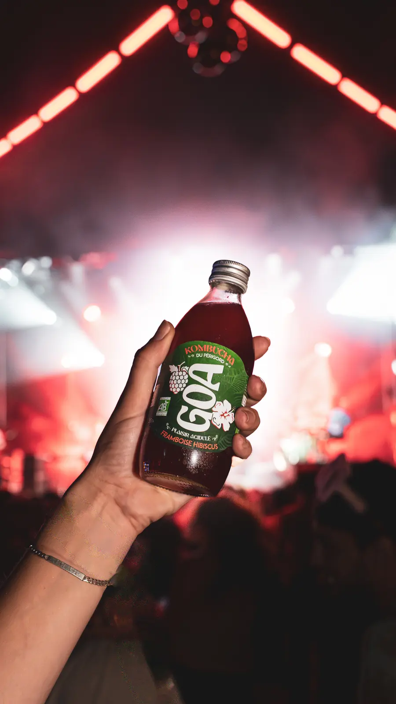

Chez GOA, on brasse un kombucha vivant, bio et non pasteurisé, au cœur du Périgord.
Camille et Mathis ont fondé GOA avec une idée simple : proposer une vraie alternative aux sodas industriels, sans rien céder sur le goût. Aujourd’hui, l’équipe brasse chaque semaine dans sa propre brasserie, entre Sarlat et Montignac.

- Fondé
- Périgord Noir
- Brassé à
- Saint-Geniès (24)
- Label
- Agriculture biologique
- Procédé
- Non pasteurisé




Du thé, du sucre de canne, une culture patiemment entretenue — et le temps qu’il faut.